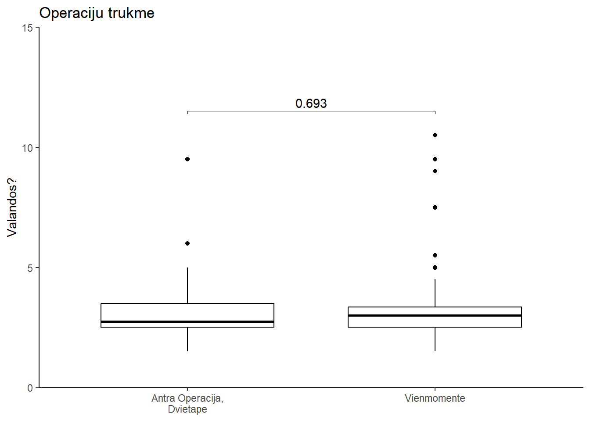

# A tibble: 2 × 3
VIENU_AR_DVIEM_ETAPAIS RASTA NERASTA
<chr> <int> <int>
1 DVIETAPE_pilnai 1 27
2 VIENMOMENTINE 1 47visualization_learning
7. NUSTATYTI IR PALYGINTI KOMPLIKACIJŲ DAŽNĮ, PRIKLAUSOMAI NUO TO AR PROFILAKTINĖ MASTEKTOMIJA ATLIKTA VIENMOMENTIŠKAI, AR DVIEM ETAPAIS.
Count Table:
# A tibble: 4 × 4
VIENU_AR_DVIEM_ETAPAIS AR_BUVO_APSKRITAI_KOMPLIKACIJA n prop
<chr> <chr> <int> <dbl>
1 DVIETAPE_pilnai NE 26 92.9
2 DVIETAPE_pilnai TAIP 2 7.1
3 VIENMOMENTINE NE 43 89.6
4 VIENMOMENTINE TAIP 5 10.4Fisherio exact testas:
Cell Contents
|-------------------------|
| N |
|-------------------------|
Total Observations in Table: 76
| AR_BUVO_APSKRITAI_KOMPLIKACIJA
VIENU_AR_DVIEM_ETAPAIS | NE | TAIP | Row Total |
-----------------------|-----------|-----------|-----------|
DVIETAPE_pilnai | 26 | 2 | 28 |
-----------------------|-----------|-----------|-----------|
VIENMOMENTINE | 43 | 5 | 48 |
-----------------------|-----------|-----------|-----------|
Column Total | 69 | 7 | 76 |
-----------------------|-----------|-----------|-----------|
Fisher's Exact Test for Count Data
------------------------------------------------------------
Sample estimate odds ratio: 1.503844
Alternative hypothesis: true odds ratio is not equal to 1
p = 1
95% confidence interval: 0.2256889 16.86679
Alternative hypothesis: true odds ratio is less than 1
p = 0.8091513
95% confidence interval: 0 11.36703
Alternative hypothesis: true odds ratio is greater than 1
p = 0.4869122
95% confidence interval: 0.2884195 Inf
Kaip matai Fisher’s exact P>0.99 taigi su skirtumo neradome.
8. PALYGINTI KOMPLIKACIJŲ DAŽNĮ, PRIKLAUSOMAI NUO TO AR PACIENTĖ JAU TURĖJO ONKOLOGINĮ SUSIRGIMĄ ANAMNEZĖJE AR NE.
Cell Contents
|-------------------------|
| N |
|-------------------------|
Total Observations in Table: 76
| AR_BUVO_APSKRITAI_KOMPLIKACIJA
SIRGO_AR_PIRMINE | NE | TAIP | Row Total |
-----------------|-----------|-----------|-----------|
PIRMINE | 34 | 4 | 38 |
-----------------|-----------|-----------|-----------|
SIRGO | 35 | 3 | 38 |
-----------------|-----------|-----------|-----------|
Column Total | 69 | 7 | 76 |
-----------------|-----------|-----------|-----------|
Fisher's Exact Test for Count Data
------------------------------------------------------------
Sample estimate odds ratio: 0.7316042
Alternative hypothesis: true odds ratio is not equal to 1
p = 1
95% confidence interval: 0.09969123 4.678089
Alternative hypothesis: true odds ratio is less than 1
p = 0.5
95% confidence interval: 0 3.602
Alternative hypothesis: true odds ratio is greater than 1
p = 0.784835
95% confidence interval: 0.1347284 Inf
Kaip matai identiška situacija, P value >0,99
9. PALYGINTI KOMPLIKACIJŲ DAŽNĮ, PRIKLAUSOMAI NUO PACIENTĖS AMŽIAUS.
Summary stats:
# A tibble: 2 × 4
AR_BUVO_APSKRITAI_KOMPLIKACIJA amzius.vid amzius.sn amzius.size
<chr> <dbl> <dbl> <int>
1 NE 43.7 9.23 69
2 TAIP 42.4 8.26 7T_testas:
Two Sample t-test
data: AMZIUS by AR_BUVO_APSKRITAI_KOMPLIKACIJA
t = 0.33702, df = 74, p-value = 0.7371
alternative hypothesis: true difference in means between group NE and group TAIP is not equal to 0
95 percent confidence interval:
-6.010736 8.457941
sample estimates:
mean in group NE mean in group TAIP
43.65217 42.42857 P=0.73 pagal turimus duomenis statistiskai reiksmingo skirtumo neradome
10. PALYGINTI KOMPLIKACIJŲ DAŽNĮ, GRUPĖJE KUR ATLIKTA PARUOŠIAMOJI OPERACIJA (DVIEM ETAPAIS), PRIKLAUSOMAI NUO TAIKYTO REKONSTRUKCIJOS METODO.
Count Table ir Fisherio Testas:
Cell Contents
|-------------------------|
| N |
|-------------------------|
Total Observations in Table: 28
| Tipas
Komplikacija | ABIPUSIS_TRAM | PREPECTORAL_IMPLANTAI | SUBPECTORAL_IMPLANTAI | Row Total |
-------------|-----------------------|-----------------------|-----------------------|-----------------------|
NE | 1 | 2 | 23 | 26 |
-------------|-----------------------|-----------------------|-----------------------|-----------------------|
TAIP | 0 | 0 | 2 | 2 |
-------------|-----------------------|-----------------------|-----------------------|-----------------------|
Column Total | 1 | 2 | 25 | 28 |
-------------|-----------------------|-----------------------|-----------------------|-----------------------|
Fisher's Exact Test for Count Data
------------------------------------------------------------
Alternative hypothesis: two.sided
p = 1
Fisherio testai poromis:
Pairwise comparisons using Fisher's exact test for count data
data: as.matrix(df.t)
ABIPUSIS_TRAM PREPECTORAL_IMPLANTAI
PREPECTORAL_IMPLANTAI 1 -
SUBPECTORAL_IMPLANTAI 1 1
P value adjustment method: fdrKaip matome niekur skirtumo neradome, BET samples labai mazi.
11. PALYGINTI AR PANAUDOTŲ IMPLANTŲ TŪRIS TURĖJO ĮTAKOS KOMPLIKACIJŲ DAŽNIUI?
Summary Stats:
# A tibble: 2 × 4
AR_BUVO_APSKRITAI_KOMPLIKACIJA implantu_turis implantu_sn implantu_sample
<chr> <dbl> <dbl> <int>
1 NE 335. 78.4 65
2 TAIP 342. 85.8 6t_testas
# A tibble: 1 × 8
.y. group1 group2 n1 n2 statistic df p
* <chr> <chr> <chr> <int> <int> <dbl> <dbl> <dbl>
1 Turis NE TAIP 65 6 -0.177 5.80 0.866Visualizacija
Isskaidyta pagal grupes:
Scale for fill is already present.
Adding another scale for fill, which will replace the existing scale.12. PALYGINTI AR TINKLELIO PANAUDOJIMAS TURĖJO ĮTAKOS KOMPLIKACIJŲ DAŽNIUI.
Tinklelis
Komplikacija NE TAIP
NE 20 45
TAIP 1 5
Cell Contents
|-------------------------|
| N |
|-------------------------|
Total Observations in Table: 71
| Tinklelis
Komplikacija | NE | TAIP | Row Total |
-------------|-----------|-----------|-----------|
NE | 20 | 45 | 65 |
-------------|-----------|-----------|-----------|
TAIP | 1 | 5 | 6 |
-------------|-----------|-----------|-----------|
Column Total | 21 | 50 | 71 |
-------------|-----------|-----------|-----------|
Fisher's Exact Test for Count Data
------------------------------------------------------------
Sample estimate odds ratio: 2.201033
Alternative hypothesis: true odds ratio is not equal to 1
p = 0.6623144
95% confidence interval: 0.2245785 110.2263
Alternative hypothesis: true odds ratio is less than 1
p = 0.8890461
95% confidence interval: 0 54.34764
Alternative hypothesis: true odds ratio is greater than 1
p = 0.4216246
95% confidence interval: 0.2917281 Inf
Fisher's Exact Test for Count Data
data: t
p-value = 0.6623
alternative hypothesis: true odds ratio is not equal to 1
95 percent confidence interval:
0.2245785 110.2263460
sample estimates:
odds ratio
2.201033 13. PALYGINTI KOMPLIKACIJU DAZNI PRIKLAUSOMAI NUO KRUTU PTOZES.
DVIEM ETAPAIS
I_PT
Komplikacija I II III
NE 3 17 6
TAIP 0 2 0
Pairwise comparisons using Fisher's exact test for count data
data: count_table
I:II I:III II:III
NE:TAIP 1 1 1
P value adjustment method: noneVIENU ETAPU
PT
Komplikacija 0.0 I II
NE 18 8 7
TAIP 1 0 4
Cell Contents
|-------------------------|
| N |
|-------------------------|
Total Observations in Table: 38
| PT
Komplikacija | 0.0 | I | II | Row Total |
-------------|-----------|-----------|-----------|-----------|
NE | 18 | 8 | 7 | 33 |
-------------|-----------|-----------|-----------|-----------|
TAIP | 1 | 0 | 4 | 5 |
-------------|-----------|-----------|-----------|-----------|
Column Total | 19 | 8 | 11 | 38 |
-------------|-----------|-----------|-----------|-----------|
Fisher's Exact Test for Count Data
------------------------------------------------------------
Alternative hypothesis: two.sided
p = 0.03830721
Fisher's Exact Test for Count Data
data: t
p-value = 0.03831
alternative hypothesis: two.sided
Pairwise comparisons using Fisher's exact test for count data
data: .
0.0:I 0.0:II I:II
NE:TAIP 1 0.04724 0.1032
P value adjustment method: noneCia idomi situacija. Kai klausiame ar yra skirtumas tarp grupiu, ji randame (P=0.038). Kai ieskome tarp kuriu grupiu yra skirtumas, t.y. darome testa 3 kartus (lyginame 0 ir I, 0 ir II, i ir II). Siaip darant kelis p testus vienu metu turretume pataisyti p value. Vadinama p value correction for multiple comparisons. Cia nepataisiau, nes pataisius guanasi p>0,05. Ar nori truputi pasukciauti ir pasilikti sia reiksme prilauso nuo taves.
14. PALYGINTI KOMPLIKACIJŲ DAŽNĮ, PRIKLAUSOMAI NUO PAŠALINTŲ AUDINIŲ SVORIO
LAUKIU DUOMENU
t-testas (ar turis lemia komplikacijas):
# A tibble: 1 × 8
.y. group1 group2 n1 n2 statistic df p
* <chr> <chr> <chr> <int> <int> <dbl> <dbl> <dbl>
1 Turis NE TAIP 93 5 1.58 6.19 0.16315. PALYGINTI LOVADIENIŲ SKAIČIŲ SU KRŪTŲ PAKĖLIMO TIPU, PO PIRMOJO ETAPO.
# A tibble: 4 × 4
Peksija mean sn sample_size
<chr> <dbl> <dbl> <int>
1 APATINE 3.67 1 9
2 BENELLI 1 NA 1
3 SUPEROMEDIALINE 3 1.21 12
4 VIRSUTINE 3.5 2.07 6[1] "VARIACIJOS TESTAS:"# A tibble: 1 × 4
df1 df2 statistic p
<int> <int> <dbl> <dbl>
1 2 24 1.09 0.354[1] "Equal-variance two-sample T-test:"# A tibble: 3 × 10
.y. group1 group2 n1 n2 statistic df p p.adj p.adj.signif
* <chr> <chr> <chr> <int> <int> <dbl> <dbl> <dbl> <dbl> <chr>
1 Lovadieniai APATI… SUPER… 9 12 1.35 19 0.194 0.582 ns
2 Lovadieniai APATI… VIRSU… 9 6 0.210 13 0.837 1 ns
3 Lovadieniai SUPER… VIRSU… 12 6 -0.653 16 0.523 1 ns 16. PALYGINTI SN TARP GRUPIŲ.
# A tibble: 2 × 4
Stage mean sd n
<chr> <dbl> <dbl> <int>
1 II_max 26.4 3.12 24
2 I_max 21.6 3.21 23[1] "EQUAAL-VARIANCE TWO-SAMPLE T-testas:"# A tibble: 1 × 8
.y. group1 group2 n1 n2 statistic df p
* <chr> <chr> <chr> <int> <int> <dbl> <dbl> <dbl>
1 max I_max II_max 23 24 -5.25 44.8 0.00000409mapping: y = 0.3, label = ~paste("n=", sample_size), vjust = 0.1
geom_text: parse = FALSE, check_overlap = FALSE, na.rm = FALSE
stat_identity: na.rm = FALSE
position_identity 17. PALYGINTI PAŠALINTŲ AUDINIŲ KIEKĮ TARP GRUPIŲ.
Duomenys isskirti pagal krutis.
# A tibble: 1 × 8
.y. group1 group2 n1 n2 statistic df p
* <chr> <chr> <chr> <int> <int> <dbl> <dbl> <dbl>
1 Turis Dvietape Vienmomente 32 66 6.32 40.7 0.00000015718. NUSTATYI OPERACIJOS TRUKMIŲ VIDURKIUS VISAIS ETAPAIS.
# A tibble: 2 × 4
Tipas mean sd n
<chr> <dbl> <dbl> <int>
1 II_OPERACIJOS_ETAPO_TRUKME 3.20 1.60 28
2 VIENU_ETAPU_OPERUOJANT_OPERACIJOS_TRUKME 3.36 1.95 48# A tibble: 1 × 8
.y. group1 group2 n1 n2 statistic df p
* <chr> <chr> <chr> <int> <int> <dbl> <dbl> <dbl>
1 Trukme II_OPERACIJOS_ETAPO_TRUKME VIENU_ETA… 28 48 -0.397 65.7 0.693
19. PALYGINTI AR KRŪTŲ PTOZĖ TURĖJO ĮTAKOS CHIRURGINIO METODO PASIRINKIMUI
Count Table:
Ptoze
Operacija 0.0 I II III
I_PT 19 8 11 0
II_PT 0 3 19 6Fisherio testas:
[1] "Fisherio Exact:"
Cell Contents
|-------------------------|
| N |
|-------------------------|
Total Observations in Table: 66
| Ptoze
Operacija | 0.0 | I | II | III | Row Total |
-------------|-----------|-----------|-----------|-----------|-----------|
I_PT | 19 | 8 | 11 | 0 | 38 |
-------------|-----------|-----------|-----------|-----------|-----------|
II_PT | 0 | 3 | 19 | 6 | 28 |
-------------|-----------|-----------|-----------|-----------|-----------|
Column Total | 19 | 11 | 30 | 6 | 66 |
-------------|-----------|-----------|-----------|-----------|-----------|
Fisher's Exact Test for Count Data
------------------------------------------------------------
Alternative hypothesis: two.sided
p = 1.279751e-07
count_table Ptoze
Operacija 0.0 I II III
I_PT 19 8 11 0
II_PT 0 3 19 6Iliustracija:

Komentaras: Pasiglinti apie one-sided fisher test. One sided duoda significance tarp II ir I grupiu.
20. PALYGINTI AR SN TURĖJO ĮTAKOS CHIRURGINIO METODO PASIRINKIMUI.
IDENTISKA 16ui klausimui.
21. PALYGINTI AR TINKLELIO PANAUDOJIMAS PRIKLAUSĖ NUO NAUDOTŲ IMPLANTŲ TŪRIO.
Summary Stats:
`summarise()` has grouped output by 'Tipas'. You can override using the
`.groups` argument.# A tibble: 4 × 5
# Groups: Tipas [2]
Tipas Tinklelis mean sd n
<chr> <chr> <dbl> <dbl> <int>
1 D_Turis NE 359 98.1 5
2 D_Turis TAIP 362. 70.1 22
3 V_Turis NE 321. 86.8 16
4 V_Turis TAIP 320. 74.1 28Ar Turis priklauso nuo Operacijos Tipo:
# A tibble: 1 × 8
.y. group1 group2 n1 n2 statistic df p
* <chr> <chr> <chr> <int> <int> <dbl> <dbl> <dbl>
1 Turis D_Turis V_Turis 27 44 2.22 57.5 0.0306Ar Turis priklauso nuo Tinklelio naudojimo:
# A tibble: 1 × 8
.y. group1 group2 n1 n2 statistic df p
* <chr> <chr> <chr> <int> <int> <dbl> <dbl> <dbl>
1 Turis NE TAIP 21 50 -0.372 32.5 0.712ANOVA: Ar Turis priklauso nuo Tinklelio arba Tipo arba ju interakcijos:
Df Sum Sq Mean Sq F value Pr(>F)
Tipas 1 27968 27968 4.651 0.0346 *
Tinklelis 1 0 0 0.000 0.9978
Tipas:Tinklelis 1 40 40 0.007 0.9353
Residuals 67 402924 6014
---
Signif. codes: 0 '***' 0.001 '**' 0.01 '*' 0.05 '.' 0.1 ' ' 1Kas yra interakcija? For example, if a researcher is studying how gender (female vs. male) and dieting (Diet A vs. Diet B) influence weight loss, an interaction effect would occur if women using Diet A lost more weight than men using Diet A. Interaction effects contrast with—and may obscure—main effects.
Scale for fill is already present.
Adding another scale for fill, which will replace the existing scale.summary stats:
# A tibble: 2 × 4
Tipas mean sd n
<chr> <dbl> <dbl> <int>
1 D_Turis 361. 73.8 27
2 V_Turis 320. 77.9 44